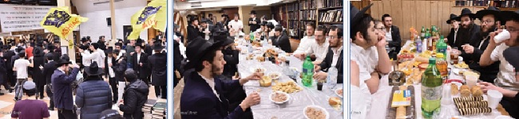

צילום: שמואל עמית יום ראשון, כ”ח אדר אחרי תפילת שחרית במניין של הרבי שליט”א מלך
אחרי תפילת שחרית במניין של הרבי שליט”א מלך המשיח מתקיימות בקדמת 770 התוועדויות לרגל הנחת תפילין לתמימים דוד סגל ואשר יהודה בלפר. התמימים אומרים איתם ‘לחיים’ ומברכים אותם שיזכו להיות החיילים שיביאו את ההתגלות המיידית של מלך המשיח.

אחרי תפילת שחרית במניין של הרבי שליט”א מלך המשיח מתקיימות בקדמת 770 התוועדויות לרגל הנחת תפילין לתמימים דוד סגל ואשר יהודה בלפר. התמימים אומרים איתם ‘לחיים’ ומברכים אותם שיזכו להיות החיילים שיביאו את ההתגלות המיידית של מלך המשיח.
שיעור הדבר מלכות השבועי מתקיים כמדי שבוע לאחר תפילת מנחה. השבוע מתחיל ‘מחזור חדש’ בלימוד הדבר מלכות עם שיחת ש”פ ויקרא תנש”א, דבר שגורם לתוספת חיות ולריבוי התמימים המצטרפים לשיעור. את השיעור מוסר בתחילת השבוע הת’ גד שלום, ובהמשכו - הת’ מנחם מענדל רוזנפלד.
היום זהו היום האחרון להזמנת מצות ב’מבצעים סנטר’, לקראת חג הפסח הבעל”ט. התמימים שעדיין לא הספיקו לעשות זאת, מזדרזים היום להזמין את המצות אותן יחלקו ליהודים במבצעים, בימי שישי הקרובים.
הלילה מתקיימים ריקודי שמחה, שמהווים את הריקודים האחרונים בתוך חודש אדר. אך בבית חיינו חודש אדר לא מפסיק, ואת הריקודים ממשיכים עד לי”א ניסן. במהלך הריקודים מגיעה למקום קבוצת מבקרים, שעד מהרה מוצאת את עצמה משתלבת במעגלי הרוקדים.
יום שני, כ”ט אדר
במשך היום מתחילות להיראות בלובי של 770 מזוודות, אות לכך שהתמימים הלומדים בישיבות תומכי תמימים ברחבי תבל, חוזרים הביתה אל הוריהם, וטפטוף האורחים מתחיל גם הוא, תמימים ואברכים שלא ויתרו ובאו לחגוג את יום הבהיר י”א ניסן ואת ימי חג הפסח במחיצתו של אבינו רוענו - הרבי מלך המשיח שליט”א.
סדר לקוטי שיחות מתקיים לאחר תפילת מעריב עם הרבי שליט”א מלך המשיח, ומשתתפים בו תמימים רבים, ובסיומו זוכים רבים בהגרלות שנערכות כמיטב המסורת. כמו כן, מתקיים ב’טאשקענטער שול’ המבחן על השלב הראשון במסגרת מבצע ‘וראו כל בשר’ - מבצע ההכנה לי”א ניסן של תלמידי התמימים ברחבי תבל.
לאחר מכן מתקיימים הריקודים, שכאמור, ממשיכים בבית חיינו עד לי”א ניסן. בסיום הריקודים נפתחת ההתוועדות הקבועה בפינה הצפונית מזרחית, מתוך אמונה וביטחון בנצחיות חייו של כ”ק אדמו”ר שליט”א מלך המשיח, ולחיזוק הציפייה העזה להתגלותו המושלמת.
ב’ר’ געצל’ס שול’ מתקיימת התוועדות מיוחדת עבור תלמידי הקבוצה, יחד עם הרה”ת חיים אברביה - משפיע בישיבת תות”ל הקריות, שמתוועד עם התמימים על הנדרש מהם בתור תמימים בקבוצה.
בשעות הלילה נצבעים מחדש העמודים וחלק מהקירות של בית חיינו, ממש בבחינת ‘לחזק את בדק הבית’, כיאה לביתו של נשיא הדור.
יום שלישי, ר”ח ניסן
תפילת שחרית של ראש חודש, יחד עם אמירת ההלל מלווה בניגונים רבים. זוהי גם הפעם האחרונה בה שרים באמירת הלל את הניגון על פרקו של הרבי שליט”א מלך המשיח - פרק קט”ו. לאחר התפילה מתקיימת התוועדות בר מצווה. בהתוועדות משתתף הרה”ח בער’ל ליפסקר שמתוועד עם המשתתפים במשך שעה ארוכה.
היום מתחיל השלב השני של מבצע ההכנה לי”א ניסן ‘וראו כל בשר’, במסגרתו צריכים התמימים ללמוד מדי יום בחברותא קטעי שיחות בעניין יום הולדת של צדיק בכלל, של רבי בפרט, ובמיוחד בקשר ליום הולדתו של הרבי שליט”א מלך המשיח.
הלילה לאחר הריקודים מתקיימת התוועדות לתמימים בקבוצה עם הרה”ח אריה לוי - משגיח ומנהל רוחני בישיבת תות”ל הקריות, ששוהה כאן בימים אלו. הרב לוי משתף את התמימים בזכרונותיו משנת הקבוצה, ומעורר אותם על התפקיד והעבודה הנדרשת מהם בחיי היום–יום.
במרכז 770 מתקיימת התוועדות בקשר עם חגיגת סיום הלכות ביאת המקדש והתחלת הלכות איסורי מזבח ברמב”ם. באמצע ההתוועדות מגיע הרה”ח שלום הלוי ברוכשטט, ומלמד את הניגון אותו חיבר לקראת י”א ניסן על פרקו החדש של הרבי שליט”א - פרק קט”ז.
יום רביעי, ב’ ניסן – “יחי המלך”
היום נכנסים לשנת השלושים לאמירת השיחה המפורסמת בב’ ניסן תשמ”ח - השיחה בה דיבר הרבי על ההוספה בחיי נשיא הדור, הנפעלת באמצעות הכרזת העם ‘יחי המלך’. ביום זה רבים חוזרים על השיחה, ובעיקר - חיים ומפנימים את הנאמר בה, ומתחזקים בכל העניינים הקשורים להכרזת הקודש ‘יחי אדונינו’ ולנשיא הדור - מלך המשיח.
היום נערכת חלוקת הכובעים לקראת חג הפסח עבור תלמידי הקבוצה - נדבת הנגיד החסידי הרה”ח שלום דובער דריזין, ובאמצעות ארגון ‘קופת בחורים’. שניהם גם יחד דואגים בכל השנה לצרכיהם של התמימים, ובמיוחד בהתקרב חג הפסח.
בשעות הערב מסדרים את הספסלים בזאל הגדול לקראת התוועדות ב’ ניסן - יום ההילולא של אדמו”ר הרש”ב, והתחלת הנשיאות של אדמו”ר הריי”צ, ובקשר עם שנת השלושים לשיחה הידועה בעניין ‘יחי המלך’ - ההתוועדות המרכזית של בית הכנסת, שתחל לאחר תפילת מעריב [דיווח מפורט מההתוועדות - מתפרסם במדור החדשות].
יום חמישי, ג’ ניסן
אחרי תפילת שחרית מתקיימת בקדמת 770 התוועדות לרגל הבר מצווה של הת’ דוד רייניץ. התמימים אומרים איתו ‘לחיים’, ומברכים אותו שיזכה לחגוג את יומו הגדול, יחד עם עם ישראל כולו - בהתגלותו של מלך המשיח.
היום מתקיימת האסיפה של וועדת ליובאוויטש - המורכבת מבעלי מנגנים חסידיים, שבוחרים מבין הניגונים שחוברו לכבוד יום הולדתו של הרבי שליט”א, את הניגון על הפרק החדש - קאפיטל קט”ז. מספר דקות לפני השעה שבע בערב נודע על הניגון הנבחר - הניגון שחובר ע”י הרה”ח דוד כהנוב, משפיע ב’אהלי תורה’ בשכונת המלך.
לאחר תפילת מעריב מתקיים במערב 770 השיעור העיוני השבועי בגאולה ומשיח. מוסר השיעור השבוע - הרה”ח דוד כהנוב, מראה כיצד הגאולה נמצאת בתוך הגלות, ע”פ שיחת כ”ק אדמו”ר שליט”א בנוגע לנחום איש גמזו ורבי עקיבא.
בסיום השיעור פוצחת התזמורת בשירה וזמרה, וחיש מהר פורצים התמימים בריקודי שמחה סוערים. מלחין הניגון החדש מקבל את המיקרופון, ותוך מספר דקות לומדים כולם את הניגון החדש, והריקודים מתחזקים ביתר שאת. במשך למעלה משעתיים רוקדים עם הניגון, ומתמלאים בשמחה עצומה מהזכות העצומה- להיות במחיצתו של אבינו רוענו ביום הולדתו.
הריקודים נמשכים עד קרוב לשעה 1:00 בלילה, אז מתיישבים התמימים להתוועדויות ליל שישי בכל רחבי 770. התמימים מקבוצה ע”ז יושבים יחד להתוועדות ‘שיעור אחדות’ השבועית, להתחזק ולהתעורר יחד מתוך אהבת רעים.
יום שישי, ד’ ניסן
לפני היציאה למבצעים, מצטיידים כל התמימים בערכת שי מיוחדת: זוג לחמניות לסעודת שבת, אותם יחלקו לכל היהודים במסלול המבצעים. לכל חבילה מצורפת הזמנת כבוד מפוארת שמזכירה ליהודים - בדיוק כמו סעודת השבת בה מתאספים כל המשפחה סביב אבא, כך גם אסור לשכוח את המעמד האדיר בו נתאסף כל משפחת דוברי העברית בניו יורק סביב אבא, הרבי שליט”א מלך המשיח בעל יום ההולדת.
אין ספק ששי מקורי זה תורם רבות לתעמולה סביב הכינוס, ועוזר לתמימים במאמציהם להביא עוד ועוד יהודים ל–770 למעמד הגדול לכבוד מלכנו משיחנו. במשך היום יורד גשם כבד, והקור מתגבר, אך דבר אינו מונע מהתמימים - חיילי בית דוד, לכבוש כל פינה, ולהאיר את העולם כולו באור הגאולה.
ליל ש”ק פרשת ויקרא, ה’ ניסן
לקראת קבלת שבת מתמלא 770 באנ”ש והתמימים המגיעים להשתתף בתפילה עם הרבי מלך המשיח שליט”א, כאשר עד התפילה שקועים הכל בלימוד חסידות ובמיוחד - לימוד הדבר מלכות השבועי. כמו כן מדפדפים בעלונים הרבים המפוזרים ב–770, ביניהם: גיליון ‘ההתקשרות האמיתית’ ובו תיאורי יומן מי”א ניסן תשמ”ו והימים הסמוכים, בצירוף כתבי יד קודש ומענות מהרבי על ברכות שנשלחו ליום הולדתו; והקובץ השבועי מבית ‘ועד חיילי בית דוד’ בשם ‘יחי המלך’, קובץ מיוחד בקשר עם שיחת ב’ ניסן תשמ”ח, והכרזת הקודש ‘יחי אדונינו’.
שירת ה’יחי’ פורצת בסערה לקראת התפילה, ולאחר מכן הולכת ומתגברת בעוז בסיום “לכה דודי”. העיתוי המיוחד של חודש הגאולה שאליו נכנסנו - חודש שבו נולד מושיען של ישראל, כמבואר באריכות בשיחות הדבר מלכות - מגביר את הצמאון לראות את מלכנו, ואת התביעה הנחרצת שלא נתעכב אפילו כהרף עין ונזכה לכך תיכף ומיד ממש!
יום הש”ק פרשת ויקרא, ה’ ניסן
השכם בבוקר משכימים אנ”ש והתמימים ללימוד החסידות שלפני התפילה, מתוך דגש עיקרי, כמובן, על הדבר מלכות השבועי - שמחזור לימודו משנת תנש”א החל השבוע מחדש, כהכנה לשיחות הדבר מלכות של תשע”ז אותם נשמע בקרוב.
בשעת קריאת התורה בתפילת שחרית עם הרבי שליט”א, מתחוללת סערה קלה, כאשר עולה שאלה בספר התורה. בעקבות כך, בתפילת מנחה מוציאים ספר תורה אחר לקריאת התורה.
לאחר התפילה מתקיימת התוועדות קדשו של הרבי מלך המשיח שליט”א. שירת ה’יחי’ מתפשטת ברחבי הזאל, והכל מאמינים ובטוחים שהנה נפתחת הדלת ומשיח צדקנו נכנס, ונשמע את התורה החדשה מפיו. אך למרבה הצער והכאב נשארים אנו עדיין ממתינים ומצפים. יודעים ובטוחים שהרבי נמצא כאן, אך לא מוכנים להסתפק בכך עד שיכירו וידעו בגלוי כל יושבי תבל.
בהמשך להתוועדות עם הרבי שליט”א מתיישבים להתוועד עם החתנים שי’ המתכוננים להקים את ביתם, בית חב”ד, בשבוע הקרוב. השבת ההולכת ומתארכת, מאריכה את ההתוועדויות, ועד לשעת תפילת מנחה 770 מלא בעשרות התוועדויות קטנות וגדולות.
מוצאי שבת קודש
לאחר תפילת מעריב שמתחילה בזמן צאת השבת (בשעה 8:02), ועריכת ההבדלה, מוקרנים מראות קודש מהרבי שליט”א על המסך הגדול במערב בית הכנסת. בראשם - עידודי ה’יחי’ בה’ אדר תשנ”ג, וממשיך בתוכניות הוידאו השבועיות מבית ‘השיחה השבועית’ ו’לראות את מלכנו’.
בהמשך מתקיימים ריקודי שמחה בקדמת בית משיח. בסיום הריקודים מתקיימת במרכז 770 התוועדות מלוה מלכה יחד עם חגיגת סיום הלכות איסורי מזבח והתחלת הלכות מעשה הקרבנות ברמב”ם. בהתוועדות משתתף הרה”ח אליעזר טורין - שליח כ”ק אדמו”ר שליט”א בשיקאגו, שמתוועד עם הקהל על אירועי י”א ניסן בהם זכה להשתתף במשך השנים.
בפינה הצפונית מזרחית מתקיימת התוועדות בר מצווה לת’ יוסף יצחק זילבר מצפת, בהשתתפות סבו - הרה”ח שבתי בלוך, שמתוועד עם התמימים במשך שעות ארוכות.
יחי אדוננו מורנו ורבינו מלך המשיח לעולם ועד!
התוועדות ב’ ניסן המרכזית בבית חיינו
ביום רביעי ב’ ניסן - יום ההילולא של אדמו”ר הרש”ב והתחלת הנשיאות של אדמו”ר הריי”צ, התקהלו אנ”ש והתמימים להתוועדות המרכזית שאורגנה על ידי גבאי בית חיינו 770 - בקשר עם שנת השלושים לאמירת השיחה המפורסמת מב’ ניסן תשמ”ח בנוגע ל’יחי המלך’.
ההתוועדות החלה לאחר תפילת מעריב עם הקרנת מראות קודש מהרבי מלך המשיח שליט”א משיחת ב’ ניסן תשמ”ח - בה מעורר הרבי שליט”א על פעולת העם בחיי הנשיא, ע”י ההכרזה ‘יחי המלך’.
לאחר מכן עלה המנחה הרה”ח שלום שפירא והזמין את הרה”ח מיכאל חנוך גאלאמב לפתוח בדבר מלכות - בחזרת מאמר דא”ח.
הרה”ח שלום יעקב חזן - חבר מערכת ‘אוצר החסידים’ ועורך בית משיח, דיבר אודות החידוש המיוחד בשיחה זו - הוספת חיים במלך המשיח, חידוש שקשור עם ‘התקופה החדשה’ שהחלה בכ”ב שבט תשמ”ח - בו החל שלב האחרון לגאולה.
הרה”ח נחמן שפירא חבר ועד להפצת שיחות ומשפיע ראשי בבהמד”ר אהלי תורה, עורר על חיזוק ההתקשרות העולה משיחה זו ועל היחס בין המלך והעם.
המרא–דאתרא וחבר הבד”צ הגה”ח יוסף ישעיה ברוין, דיבר אודות ההכנה הראויה הנדרשת מכל אחד ואחד לקראת יום הבהיר י”א ניסן - יום ההולדת של הרבי שליט”א מלך המשיח.
הרה”ח יקותיאל פלדמן - משפיע בישיבת תות”ל המרכזית 770, דיבר אודות הכח המיוחד אותו נותן לנו הרבי בשיחה, ועל החובה מצידנו להחזיר לרבי בצורה הראויה - בלימוד התורה כנדרש מתלמידי התמימים, ובהחלטות טובות כדבעי למהוי.
לסיום התוועד המנחה הרה”ח שלום שפירא על ההוראה אותה צריך כל אחד ואחת לקחת מב’ ניסן - להתחזק בעניין של ‘יחי’ המלך’, והדברים אמורים להתבטא במעשה בפועל בהנהגה בחיי היום–יום.
ההתוועדות נחתמה בניגון ארבע בבות כשעל המסך נראית דמותו של הרבי שליט”א מלך המשיח, ובניגון ‘שבנה בית המקדש’.
לאחר מכן התקיימו ריקודי שמחה, ובסיומם התיישבו אנ”ש והתמימים להתוועדויות קטנות אל תוך הלילה. בין המתוועדים: הרה”ח יקותיאל פלדמן, הרה”ח שלום שפירא, הגה”ח יוסף ישעיה ברוין, ועוד.